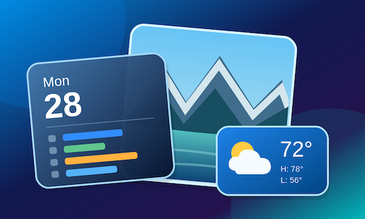

01
28
Know what’s next.
See your Google and iCloud calendars in one clear view, from a full month ahead to today’s important events.

KDB DashboardView on GitHubYOUR HOME, AT A GLANCE
KDB Dashboard turns Apple TV into a family dashboard for the things you check most: calendars, favorite photos, and the weather—together on one screen.
Built for the living room
Designed for Apple TV
THE ESSENTIALS, TOGETHER
Instead of opening apps one by one, let your biggest screen quietly keep your household in sync.
01
See your Google and iCloud calendars in one clear view, from a full month ahead to today’s important events.
02
Turn a favorite album into a living backdrop that makes your dashboard feel personal throughout the day.
03
Check current conditions, the day’s high and low, and multiple locations without reaching for your phone.
MADE FOR THE BIG SCREEN
Clean, legible, and made to be read from across the room. Browse the dashboard views in more detail.
A BETTER PLACE TO LOOK UP